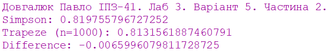
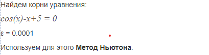

Завдання:

Тема: Форми lambda та let, вираз присвоєння set! для розв’язання нелінійних рівнянь та чисельного інтегрування функцій
Мета: Розв’язати нелінійні рівняння та здійснити чисельне інтегрування функцій наближеними методами, використовуючи мови функціонального програмування та lambda, let та set! форми.
Результати роботи:
Частина 1
Частина 2

Перевірка відповідної роботи:
Частина 1

Частина 2
Файли програм: